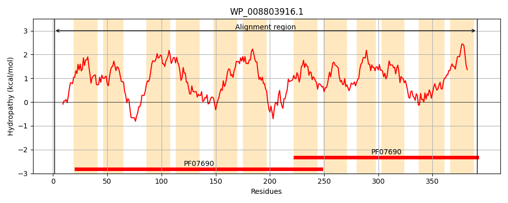
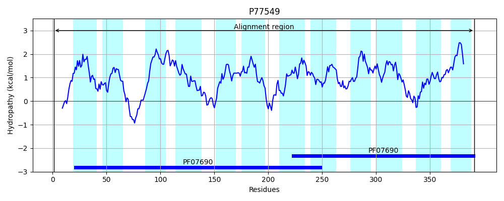
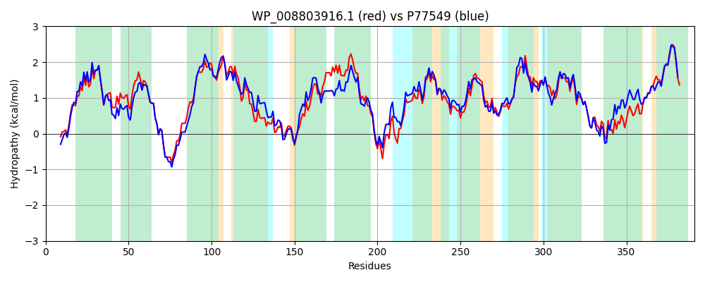

Hit Accession: P77549
Hit TCID: 2.A.1.46.6
Hit Description: gnl|BL_ORD_ID|11522 gnl|TC-DB|P77549|2.A.1.46.6 UPF0226 protein yfcJ OS=Escherichia coli (strain K12) GN=yfcJ PE=1 SV=1
Mach Len: 391
e:0.000000
Query TMS Count : 12
Hit TMS Count: 12
TMS-Overlap Score: 12.200000
Predicted Substrates:CHEBI:22599;arabinose
BLAST Alignment:
Score: 1605 , Bit scores: 622 bits, E-value: 0.0e+00, Alignment length: 391, Percentage identity: 78
Query: 1 MSAVTETTSHSSANFSLFRITFAVFLTYMTVGLPLPVIPLFVHQELGFGNTVVGVAVGIQFLATVLTRGYAGRLADQYGAKRSVLQGMLACALAGAAWLAAALLPLPVLARLGLLLLGRLILGFGESQLLTGNLSWGMGLVGPARSGKVMSWNGMAMYGSLAVGAPLGLLIYSHFGVAVLACVTMGLPLVAWLINGTVRKVAAHGGERPSLWSVIGMIWRPGIGLGLQGVGFAVIGTFVSLYFASHSWPMAGFTLTAFGGAFVVMRILFGWMPDRFGGVRVAMVSLLIEAVGLTLLGLAPNAWLALAGAALTGCGCSLIFPSLGVEVVKRVPAQVRGTALGGYAAFQDISYGLTGPLTGLLATSLGYSSVFLAGALCAALGILVTLVSFRR 391
M+AV++T + SSANFSLFRI FAVFLTYMTVGLPLPVIPLFVH ELG+GNT+VG+AVGIQFLATVLTRGYAGRLADQYGAKRS LQGMLAC LAG A L AA+LP+ + LL++GRLILGFGESQLLTG L+WG+G+VGP SGKVMSWNGMA+YG+LAVGAPLGLLI+SH+G A LA TM LP++AW NGTVRKV A GERPSLWSV+G+IW+PG+GL LQGVGFAVIGTFVSLYFAS W MAGFTLTAFGGAFVVMR++FGWMPDRFGGV+VA+VSLL+E VGL LL AP AW+ALAGAALTG GCSLIFP+LGVEVVKRVP+QVRGTALGGYAAFQDI+ G++GPL G+LAT+ GYSSVFLAGA+ A LGI+VT++SFRR
Sbjct: 1 MTAVSQTETRSSANFSLFRIAFAVFLTYMTVGLPLPVIPLFVHHELGYGNTMVGIAVGIQFLATVLTRGYAGRLADQYGAKRSALQGMLACGLAGGALLLAAILPVSAPFKFALLVVGRLILGFGESQLLTGALTWGLGIVGPKHSGKVMSWNGMAIYGALAVGAPLGLLIHSHYGFAALAITTMVLPVLAWACNGTVRKVPALAGERPSLWSVVGLIWKPGLGLALQGVGFAVIGTFVSLYFASKGWAMAGFTLTAFGGAFVVMRVMFGWMPDRFGGVKVAIVSLLVETVGLLLLWQAPGAWVALAGAALTGAGCSLIFPALGVEVVKRVPSQVRGTALGGYAAFQDIALGVSGPLAGMLATTFGYSSVFLAGAISAVLGIIVTILSFRR 391 | Protein Hydropathy Plots: |
|---|
|  |  |
Pairwise Alignment-Hydropathy Plot:
|
|---|
|  |